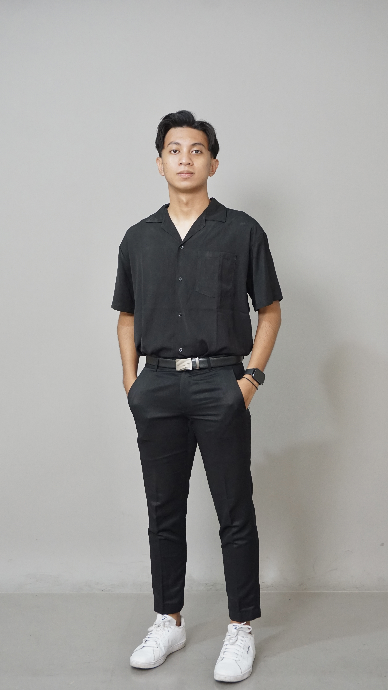

Final year Data Science student with hands-on experience in data analysis, dashboard development, and real-world datasets from government and enterprise projects. Skilled in Python, SQL, and data visualization tools to deliver impactful insights.

Saya adalah mahasiswa tingkat akhir program studi Data Science dengan pengalaman magang di sektor pemerintah dan perusahaan teknologi, khususnya dalam pengolahan data, visualisasi, dan pengembangan dashboard.
Saya terbiasa bekerja dengan data nyata untuk menghasilkan insight yang dapat digunakan dalam pengambilan keputusan operasional. Memiliki pengalaman menggunakan Python, SQL, Excel, Tableau, dan Looker Studio.
Problem: Monitoring proyek tidak terstruktur.
Solution: Membangun dashboard funneling proyek.
Problem: Sulit memahami ulasan pelanggan.
Solution: Model SVM untuk klasifikasi sentimen.
Problem: Data sulit dipahami.
Solution: Analisis dan dashboard Tableau.
Bachelor of Data Science (GPA 3.53)
Teknologi Jaringan Akses
• Menganalisis data proyek pelanggan dan jaringan serta membuat dashboard monitoring
• Memantau progres proyek untuk mendukung pengambilan keputusan operasional
• Validasi data melalui koordinasi tim dan uji petik lapangan
• Mengolah data untuk persiapan Sensus Ekonomi 2026
• Membuat visualisasi data dan konten statistik publik
• Berkolaborasi lintas tim menggunakan Excel & Tableau
• Mengelola data faktur penjualan dengan akurasi tinggi
• Rekap data penjualan untuk laporan internal
• Koordinasi distribusi dokumen ke klien
• Memimpin lebih dari 10 program & event organisasi
• Berkontribusi pada penghargaan organisasi terbaik tingkat universitas
• Membimbing mahasiswa dalam dasar data & eksplorasi data
• Membantu pemahaman algoritma dasar secara praktis
• Python for Data Science
• TOEIC & EPRT Certification
• Data Visualization (Tableau, Excel)
• Bahasa Indonesia (Native)
• English (Intermediate)
• Full Scholarship Awardee (Telkom University)
• Teaching Assistant (Data Processing Course)
• Content Creator (Instagram & TikTok Project)
Hubungi saya melalui email bimasatya29@gmail.com atau melalui LinkedIn.